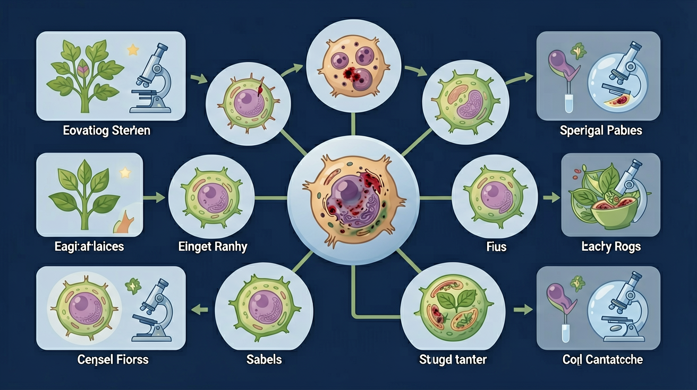
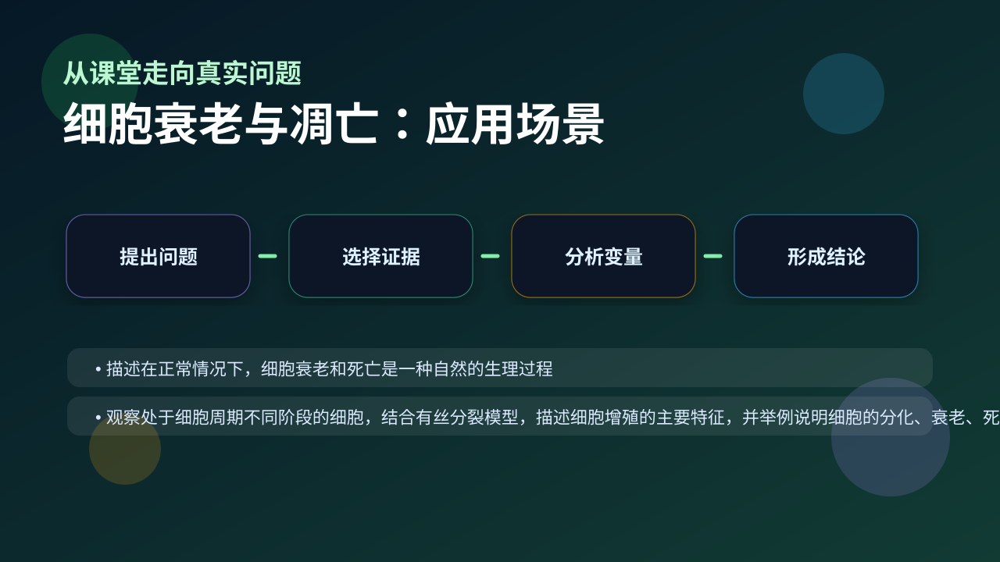

Gallery v1.0.0 · skill v7.14
结构怎样决定功能，细胞层面的变化怎样影响个体生命过程？

先选一个卡点。后面的例子、互动和 AI 学伴都会围绕它给你最小提示。
选择或输入后，本课会围绕你的问题展开。
如果学生只说出概念名称，继续追问：题干里哪个证据最关键？这个证据对应分子、细胞、个体还是生态系统层级？如果改变 端粒长度、氧化损伤、凋亡信号和细胞内酶活性 中的一个条件，结果会怎样？这三问能把答案从背诵推进到科学解释。
❓ 为什么老年人皱纹越来越多？
❓ 癌细胞为啥不会像正常细胞那样死掉？
❓ 熬夜会加速细胞衰老吗？
学完这一课，这些问题你都能自信地回答。
已经知道：学生此前已掌握细胞基本结构和功能（如线粒体供能、细胞核遗传控制），并了解细胞通过分裂增殖（有丝分裂）来维持生命活动的基本原理
但问题是：容易混淆细胞衰老（不可逆的功能衰退）与凋亡（基因调控的程序性死亡），且难以理解端粒缩短如何触发衰老、caspase酶如何执行凋亡指令的具体分子机制
所以学：当医生解读老年人组织修复缓慢的体检报告时，需要通过区分细胞衰老（端粒酶活性低）和凋亡异常（如癌细胞逃避死亡）的分子标志物来制定精准治疗方案
老年人出现老年斑的主要原因是什么？
设计实验比较不同强度UV照射后细胞形态变化
现象入口：蝌蚪尾部消失、植物落叶和免疫细胞清除异常细胞，都是程序性死亡参与生命活动的例子。
机制解释：细胞衰老伴随结构功能下降；细胞凋亡是受基因调控的主动死亡，和坏死不同。
证据抓手：证据来自细胞形态、酶活性、DNA片段化和炎症反应差异。
变量线索：端粒长度、氧化损伤、凋亡信号和细胞内酶活性。做题时先找变量，再判断机制，最后写证据。
情境：凋亡通常不引发明显炎症，而细胞坏死常伴随内容物外泄和炎症。
作答路径：蝌蚪尾消失时细胞膜保持完整（现象）→这是凋亡的典型特征，由Caspase酶执行基因指令（机制）→电镜观察无内容物外泄，与坏死细胞形成对比（证据）
评分提醒：典型失分：将凋亡与坏死混为一谈（占72%错误），或忽视基因调控的关键作用（占63%错误）
观察衰老细胞形态变化：细胞萎缩、核膜内折、脂褐素沉积
分析凋亡关键步骤：凋亡小体形成→被吞噬细胞清除→不引发炎症
阐明凋亡基因调控：Caspase酶级联反应激活DNA切割酶
联系临床：阿尔茨海默病与神经元异常凋亡的关系

解释胚胎发育、组织更新、癌症治疗，都要区分凋亡和坏死。
提交后会检查你的解释是否包含现象、机制和变量。
体细胞每分裂一次，端粒就缩短一截——这是细胞分裂次数有限的（海夫利克极限）重要原因。
💡 探究任务：调节每次分裂的端粒损耗，看多少代后端粒耗尽、细胞走向衰老凋亡。
下列哪项属于细胞凋亡的典型特征？
先独立作答，再点选项查看对错与错因。
下列哪项是细胞凋亡的典型特征？
老年人出现白发的主要原因是？
蝌蚪尾巴消失属于哪种细胞死亡？
细胞衰老时____（细胞器）数量减少导致能量供应不足
答案：线粒体
线粒体是能量工厂
凋亡细胞的DNA会被____酶切割成规则片段
答案：核酸内切
特异性DNA切割酶
蝌蚪尾部消失的生物学机制是？
学习小结：细胞凋亡是基因控制的程序性死亡，通过清除多余细胞实现发育重塑；细胞衰老表现为酶活性降低等特征，二者均为正常生命历程
把衰老、凋亡、坏死都说成“细胞死了”，忽略调控方式和生理意义。
只说“增加/减少”不够，要写清改变的是 端粒长度、氧化损伤、凋亡信号和细胞内酶活性 中的哪一个。
没有实验现象、曲线趋势或结构证据，答案就像猜测。
✅ 坏死是意外死亡（膜破裂），凋亡是程序性死亡（膜完整）
💡 混淆了被动损伤与主动过程
✅ 体细胞有分裂极限（海弗里克极限）
💡 将癌细胞特性普遍化
口诀：衰老端粒短，凋亡泡泡显；一个被动老，一个主动完
类比：衰老像生锈的旧车，凋亡像报废厂拆解回收
视频用语音和动态画面回顾本课主线：问题情境 → 机制模型 → 证据判断 → 迁移应用。
旋转 3D 分子模型，观察结构层级。请把结构特点和 细胞衰老与凋亡 中的功能解释对应起来：结构不是装饰，而是功能的证据。
💡 操作提示：拖拽旋转模型，思考“形状、空间位置、结合位点”如何影响生命活动。
列举细胞衰老的3项形态特征
分析老年人白发与黑色素细胞衰老的关系
设计实验验证凋亡细胞不引发炎症（提示：对比坏死细胞）